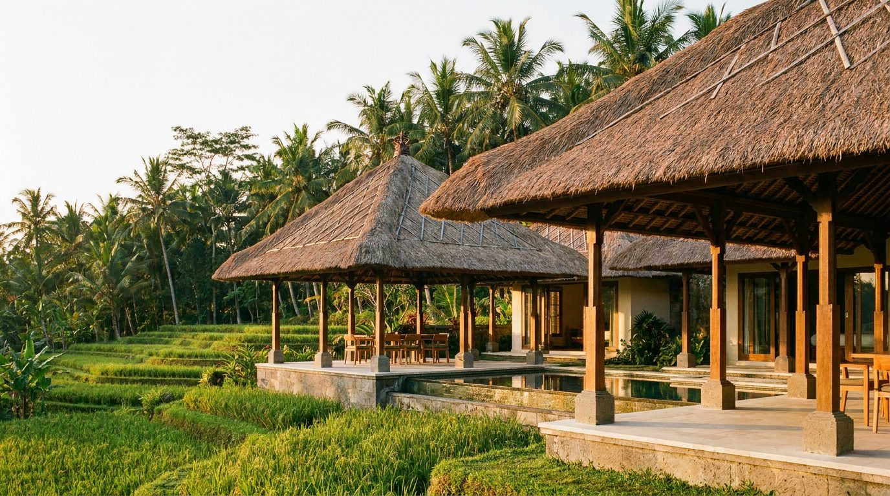
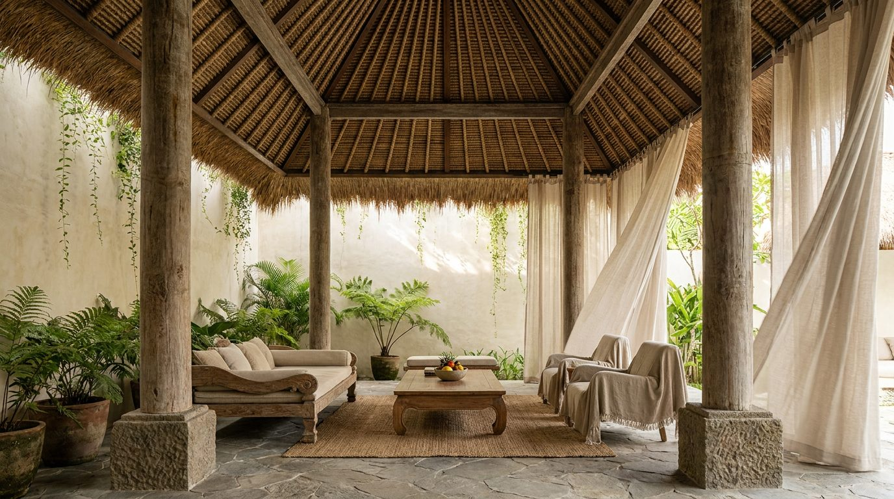

Atlante · INT-ID-01 · Indonesia · Asia
Villa a padiglioni aperti con tetto in alang-alang e pietra paras
Esempi · esterno e interno


Perché funziona
Quiet: nessun oggetto decorativo, nessuna lucentezza; il lusso è l'apertura totale sul paesaggio e la materia viva (teak oliato, pietra porosa, calce grezza). Il verde entra come massa vegetale, non come colore d'arredo.
Architettura · elementi riproducibili
- quattro colonne in teak 200x200 mm, luce 4500 mm, su plinto in pietra 450 mm
- tetto in alang-alang a due falde, sporgenza 1200 mm, colmo 4,2 m
- pavimento in cemento lucidato a mano con variazione di frattazzo, lastre 2000x2000 mm
- pareti scorrevoli in teak a doghe 40 mm, apertura totale su due lati
- vasca a sfioro profonda 1500 mm, bordo in pietra paras 300 mm
- dislivello di 3 gradini tra padiglione e giardino, alzata 150 mm
- una panca bassa in teak 400 mm e un daybed in lino, nessun oggetto decorativo
Fatto verificato: IBUKU (Bali) lavora con materiali naturali e struttura in bambù su committenza residenziale a Green Village; la pagina di progetto WOHA per Alila Villas Uluwatu documenta il tipo di villa a padiglioni affacciata sul paesaggio di Uluwatu.
Valutazione: il registro quiet regge solo se la vegetazione resta fuori fuoco e la pietra mostra pori; un render troppo pulito lo fa sembrare una spa generica.
Variante Phuket: stessi elementi con legno di teak al posto del bambù, pietra calcarea locale al posto di paras, e copertura in scandole di legno; cambia il tetto, non la logica di apertura.
Luce
Prompt di generazione (EN)
Open tropical villa pavilion on a Bali hillside, 3.2 m eave height and 4.2 m ridge under an alang-alang thatch roof with a 1200 mm overhang, four oiled teak columns 200 x 200 mm at 4500 mm spacing on a 450 mm paras limestone plinth, hand-polished concrete floor with trowel variation, full-height sliding teak screens open on two sides to terraced planting and a 1500 mm deep infinity pool, walls in two-coat rough lime plaster, only a low teak bench and a linen daybed, high equatorial sun at 75 degrees filtered through palms so light falls in dappled patches from above with bright bounce from the pool, humid air, 24 mm lens at 1.2 m height, two-point perspective, warm neutral grade, no people, no text.